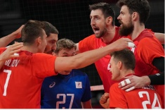

Автор: Андрей Шитихин
Дата публикации: июля 2021

Победа в четырёх партиях практически гарантировала сборной России выход в четвертьфинал.
Мужская сборная России по волейболу одержала вторую победу в групповом турнире на Олимпийских играх в Токио. В драматичном и напряжённом матче россияне в четырёх партиях взяли верх на сборной США. Это было круто — все выигранные сеты были на «больше-меньше». И в ключевые моменты российская команда терпела и не ломалась. В следующем матче — бразильцы. В стартовых матчах и сборная России, и сборная США добились побед. Россияне в четырёх сетах взяли верх над Аргентиной, а американцы в трёх партиях уверенно обыграли Францию. Вторая победа практически гарантировала любой из команд место в четвертьфинале. И весь матч прошёл в равной борьбе, когда много решало то, кто больше умеет терпеть, у кого будет больше волейболистов, способных взять игру на себя. Вся игра — просто рубка, в которой преимущество переходило от одних к другим. Наши превзошли соперников на блоке и в подаче, уступили в проценте точных атак и сделали больше собственных ошибок. Но лишь в третьей партии количество этих ошибок перешло в результат. Именно тогда не пошла игра у Максима Михайлова, неудачи которого начались с того, что его один на один блоком закрыл связующий американцев и его будущий одноклубник по казанскому «Зениту» Мика Кристенсон. Но в трёх других партиях россияне были чуть-чуть, но сильнее. В каждый решающий момент у сборной России находился свой лидер. В первой партии просто блистал Дмитрий Волков, который феерил в атаке и на подаче, а в концовке сета всё решил Егор Клюка. Во второй партии наши уступали, но в ключевой момент здорово сыграли наши центральные — блоки и атаки первым темпом помогли сравнять счёт, а Волков и Михайлов уже не отпустили американцев. Ну а четвёртый сет — вообще героизм со стороны нашей сборной. 16:20 — такое сложно отыграть. Но не для сборной России, которой управляла тренерская рука. Вовремя сделанная замена связующих, отличная игра на блоке против Мэттью Андерсона — и в концовку наши зашли с минимальным преимуществом. Тейлор Сандер бил свой последний удар наотмашь, но не попал в площадку. Дмитрий Волков стал самым результативным — 16 очков, на два меньше набрал Егор Клюка. Связующий Павел Панков трижды подал навылет, кроме выполнения своих прямых обязанностей распасовщика, каждый из парней — даже высоченный Артём Вольвич — летал по площадке, чтобы поднять «мёртвые» мячи. И самое главное — не было ни одного момента, когда команда «посыпалась» бы, когда следовали бы какие-то взаимные упрёки или недовольные взгляды. Наши парни были именно командой и победили совершенно заслуженно. 28 июля — битва со сборной Бразилии.